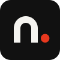
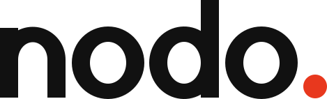
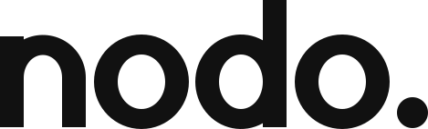

Concepto
Nodo junta los canales de aire de la Argentina en una sola grilla, en la web y en el decodificador del living. Un nodo es el punto donde se cruzan las señales: eso es la app.
Un punto, dos lecturas
El punto rojo que cierra la palabra es el nodo. En la app tiene un trabajo concreto: marca lo que está en vivo y el canal que estás mirando. Cada vez que aparece, significa “esto está pasando ahora”.
Moderno y tecnológico, sin ruido
La identidad se apoya en tres cosas: una palabra muy pesada, un negro casi puro y un solo rojo. No hay degradados, brillos ni texturas. La tecnología se nota en la precisión, no en los efectos.
El nombre
Nodo. Cuatro letras, se dice igual en todo el país y no hace falta explicarlo.
Es una palabra común del castellano, corta para el control remoto y para la pantalla de inicio del televisor, donde el nombre convive con decenas de apps.
Cómo se escribe
| Contexto | Forma |
|---|---|
| Logo | nodo. en minúscula, con el punto rojo. Siempre el archivo, nunca tipeado. |
| Texto corrido | Nodo, con mayúscula inicial y sin punto: “Abrí Nodo en el decodificador”. |
| Tienda y launcher | Nodo |
| Nunca | NODO, NoDo, Nodo TV, “la Nodo”. |
El logo
Construcción
El logo está dibujado, no tipeado. Cada letra sale de círculos, elipses y rectángulos sobre una unidad donde la altura de x vale 100. Las astas miden 26 y los trazos curvos se afinan a 22 arriba y abajo para que el peso se vea parejo. Las letras redondas sobrepasan 2 unidades la línea base y la altura de x. El interletrado es muy cerrado a propósito: la sensación de la grotesca en peso 900 con −0,06 em.

Versiones

logo.svg · principal, fondos claros
logo-on-dark.svg · fondos oscuros y la app
mono-dark.svg · un color, para sellos, grabados o impresión a una tinta
mono-light.svg · un color sobre fondo oscuro o fotografía oscuramark.svg · símbolo, avatar e íconomark-small.svg · favicon y tamaños de 24 px o menosSobre Pantalla (#0E0E0E), el cuadrado del símbolo casi no se distingue del fondo (1,02:1): ahí lo sostienen la n y el punto. Si el borde del símbolo tiene que verse, ponelo sobre Hueso o sobre una superficie clara.
Área de protección
Tamaños mínimos
| Pieza | Pantalla | Impresión | A tamaño real |
|---|---|---|---|
Logo nodo. | 72 px de ancho | 20 mm de ancho | |
| Símbolo completo | 32 px | 8 mm | |
| Símbolo simplificado | 16 px a 24 px | 4 mm a 7 mm |
Por debajo de 72 px el interletrado cerrado empieza a empastar las letras: usá el símbolo.
Usos incorrectos
Nolo estires ni lo comprimas.
Nocambies el color del punto. Es rojo o es del mismo color que la palabra.
Nosaques el punto. Sin punto no hay nodo.
Nolo escribas con una tipografía: usá siempre el archivo.
Nouses mayúscula en el logo.
Nole agregues degradados, brillos ni sombras.
Nolo pongas sobre rojo: el punto desaparece.
Nolo rotes ni lo inclines.
Nopintes toda la palabra de rojo. El rojo es solo el punto.
Color
Cinco colores, uno solo con tono. El rojo ocupa poco y por eso se ve: el punto, “en vivo”, el canal actual y el foco.
Proporción de uso aproximada: Pantalla o Hueso 70 %, Negro 20 %, Gris 6 %, Rojo menos del 5 %.
Contrastes medidos
Relación de contraste WCAG 2.x calculada sobre los valores HEX. Texto normal necesita 4,5:1; texto grande (24 px, o 19 px en negrita) y elementos gráficos como el logo, el punto o el anillo de foco necesitan 3:1.
| Par | Contraste | Texto normal | Gráfico / texto grande |
|---|---|---|---|
| Negro sobre Hueso | 17,16:1 | AAA | |
| Hueso sobre Pantalla | 17,54:1 | AAA | |
| Hueso sobre Negro | 17,16:1 | AAA | |
| Gris sobre Hueso | 6,07:1 | AA | |
| Rojo sobre Pantalla | 4,61:1 | AA, justo | |
| Rojo sobre Negro (punto del símbolo) | 4,51:1 | AA, justo | |
| Negro sobre Rojo | 4,51:1 | AA, justo | |
| Rojo sobre Hueso (punto del logo) | 3,80:1 | No: nunca texto rojo sobre Hueso | |
| Hueso sobre Rojo | 3,80:1 | No: solo texto grande | |
| Gris sobre Pantalla | 2,89:1 | No | No: el Gris es solo para fondos claros |
| Negro sobre Pantalla (borde del símbolo) | 1,02:1 | No | No: el cuadrado se funde con el fondo |
Tipografía
Schibsted Grotesk, y nada más.
Una grotesca con mucho carácter en los pesos altos y muy legible en los bajos. Es libre (licencia OFL) y está en Google Fonts. Usamos cuatro pesos: 400 para leer, 600 para la interfaz, 800 para títulos y 900 solo para títulos muy grandes.
Si la fuente no carga, la interfaz cae en la tipografía del sistema. El logo no depende de ninguna fuente: está dibujado.
| Uso | Peso | Tamaño | Interletrado |
|---|---|---|---|
| Título de pantalla | 900 | 3,05 rem | −0,03 em |
| Sección | 800 | 1,95 rem | −0,02 em |
| Nombre de canal | 800 | 1,25 rem | −0,01 em |
| Interfaz, botones | 600 | 1 rem | 0 |
| Texto | 400 | 1 rem | 0 |
| Etiqueta (EN VIVO) | 600 | 0,8 rem | +0,06 em, mayúsculas |
Escala 1,25. En el televisor el tamaño base es más grande porque se mira a tres metros.
900 · Black
800 · ExtraBold
600 · SemiBold
400 · Regular
La marca en la app
En el televisor la app es oscura: fondo Pantalla, texto Hueso, y el rojo solo donde algo está pasando o donde está tu foco.
Canales
Tokens propuestos
Los valores completos están en tokens-propuestos.css, con los mismos nombres que usa hoy la app para poder adoptarlos sin tocar los componentes.
| Token | Valor | Uso | Contraste medido |
|---|---|---|---|
--n-0 | #0E0E0E | Fondo (Pantalla) | Hueso 17,54:1 |
--n-1 | #181715 | Riel lateral, chips | Hueso 16,28:1 |
--n-2 | #22211E | Tarjetas de canal | Hueso 14,63:1 |
--n-3 | #2F2D2A | Superficie con foco, filetes | Hueso 12,47:1 |
--n-4 | #9A978F | Texto apagado | 5,52:1 en n-2 · 4,71:1 en n-3 |
--n-5 | #CFCCC5 | Texto secundario | 10,04:1 en n-2 |
--n-6 | #F5F4F0 | Texto (Hueso) | 12,47:1 en n-3 |
--accent | #E8381E | Punto, en vivo, canal actual, foco | 4,61:1 en n-0 · 3,28:1 en n-3 |
--accent-on | #111111 | Texto sobre relleno rojo | 4,51:1 |
--focus-ring | 4px solid --accent | Foco del control remoto | 3,28:1 o más contra toda superficie |
--danger-fg | #FF9A85 | Errores, con ícono y frase | 8,35:1 en su fondo |
Estados
| Estado | Cómo se ve |
|---|---|
| Reposo | Tarjeta --n-2, nombre en Hueso 800. |
| Foco | Anillo rojo de 4 px a 4 px de distancia, superficie --n-3, escala 1,08. Sin animación si el sistema pide movimiento reducido. |
| Canal actual | Punto rojo y “Ahora” arriba a la izquierda de la tarjeta. |
| En vivo | Punto rojo y “En vivo” junto al nombre del programa o del canal. |
| Deshabilitado | Texto --n-4, sin foco, con una frase que diga por qué: “Este canal no transmite ahora”. |
| Cargando | Tarjetas vacías del mismo tamaño en --n-1. Sin ruedita girando en el medio de la pantalla. |
| Error | Ícono, frase en --danger-fg sobre --danger-bg y una acción: “Probá de nuevo”. |
El rojo cumple tres funciones (en vivo, canal actual y foco). Por eso cada una lleva su forma: punto con palabra para lo que está pasando, anillo para el foco.
Tono de voz
Hablamos como alguien que sabe de tele y te alcanza el control: corto, claro y de vos.
- Directo. Verbo primero. La acción es lo que importa.
- De vos. Voseo en toda la interfaz: “Buscá”, “Probá”, “Elegí”.
- Sin tecnicismos. Nadie necesita leer “stream” ni “buffer” para mirar tele.
- Sin exclamaciones ni emojis. La pantalla ya tiene suficiente ruido.
| Texto | Dónde |
|---|---|
| Seguir viendo | Botón para volver al último canal. |
| Volver a los canales | Salir del reproductor a la grilla. |
| Buscá un canal | Campo de búsqueda. |
| En vivo | Etiqueta con el punto rojo. |
| Ahora | Canal que estás mirando, en la grilla. |
Así sí, así no
Descargas
Todos los archivos son SVG dibujados a mano: sin fuentes, sin imágenes incrustadas, sin degradados. La geometría sale de source/nodo-geometry.mjs.
- Logo principallogo/logo.svg
- Logo sobre oscurologo/logo-on-dark.svg
- Logo un color, oscurologo/mono-dark.svg
- Logo un color, clarologo/mono-light.svg
- Símbolologo/mark.svg
- Símbolo simplificadologo/mark-small.svg
- Faviconfavicon.svg
- Banner Android TV 320 × 180android/tv-banner.svg
- Ícono de la app 432 × 432android/app-icon.svg
- Ícono adaptable, frenteandroid/app-icon-foreground.svg
- Ícono adaptable, fondoandroid/app-icon-background.svg
- Tokens de interfaztokens-propuestos.css